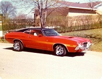

GRAN  TORINO
TORINO
The Ford Gran Torino is an automobile that was produced in the late 1960's and 1970's as a competitor in the intermediate market segment. It was named after the Turin--translating to "Torino" in Italian, also dubbed "The Italian Detroit." This old-school muscle car was one of the most mainstream sports and muscle cars on the market with an entire movie named off the model starring Clint Eastwood simply named "Gran Torino".